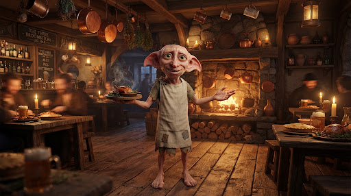

Choisir un Repas & Convives
« Le chaudron s'adapte au nombre de bouches à nourrir ! Dobby ajuste les parts et portions pour que personne ne manque sans jamais gaspiller une miette. » — Note du Chef Dobby
Dosage pondéré des ingrédients du chaudron pour éviter tout gaspillage et combler les estomacs sans surplus.
Gratin de potimarron rôti, noisettes & châtaignes
Douceur automnale au fromage des alpages gratiné, pointe de muscade et croquant de noisettes torréfiées.
Tourte campagnarde aux champignons des sous-bois & volaille
Pâte feuilletée croustillante dorée au jaune d'œuf, cèpes séchés réhydratés et effiloché de poulet fermier.
Velouté doux de panais, éclats de châtaigne & croûtons dorés
Onctuosité végétale relevée d'une larme d'huile de noisette, servi fumant avec croûtons aillés.
Règle de confection locale : Suggestions générées à partir des fiches enregistrées du foyer. Aucun moteur IA externe ni transmission distante.